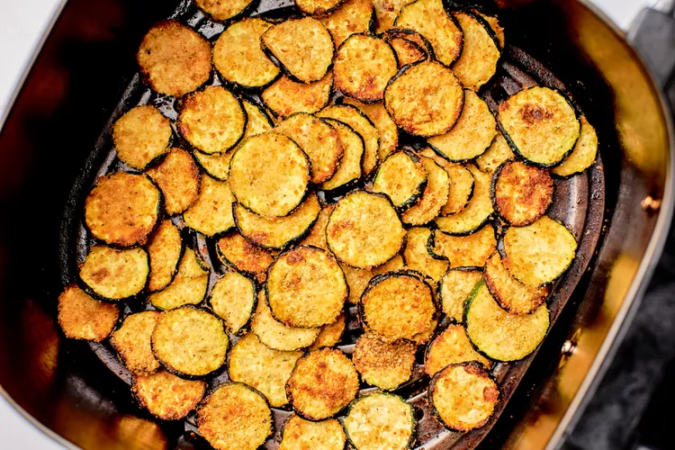

Air Fired Zucchini Chips

You might not believe it, but I was once an air fryer skeptic. I couldn't see uses beyond getting fozen spring rolls or chicken nuggest super crispy. Thankfully, the tides have turned.
Enter air fryer zucchini chips. The sweet summer squash is sliced into rounds and coated with oil and a flavorful breadcrumb mixture that, when air fried, is tender on the inside and perfectly crispy on the outside.
The recipe is super simple and unforgettable! Make it as a side for dinner, an accompaniment to lunch, throw it on a salad, or even enjoy it as a snack!
Ingredients
- 2 medium zucchini (about 1 pound total)
- 1/2 teaspoon kosher salt, plus a pinch for salting the zucchini
- 1/3 cup plain fine breadcrumbs
- 3 tablespoons freshly grated Parmesan, plus more for serving
- 2 teaspoons cornstarch
- 1 teaspoon granulated garlic or 1/2 teaspoon garlic powder, optional
- 1/4 teaspoon freshly ground black pepper
- 1 pinch cayenne, optional
- 1 tablesppon olive oil
- Cooking spray
Steps
- Prepare the zucchini: Trim the ends off the zucchini. Slice the zucchini into 3/16-inch thich rounds. Transfer the zucchini to a medium bowl followed by a pinch of salt. Use a rubber spatula, a large spoon, or your hands to toss the zucchini with the salt and set aside to sit for 5 minutes to draw out some of the moisture.
- Meanwhile, prepare the breadcrumb mixture: In a small bowl, stir together the breadcrumbs, Paresan (if using), cornstarch, granulated garlic (if using), freshly ground black pepper, a pinch of cayenne (if using), and the remaining 1/2 teaspoon of salt to continue.
- Dry the zucchini and prepare the air fryer: After 5 minutes, there will be some moisture on the zucchini and a little in the bowl. You don't want to draw all the moisture out, just a bit of the excess. Use a clean kitchen towel or paper towel to dab away the excess moisture off the zucchini rounds as much as possible. No need to go one by one or transfer it out of the bowl.
- Preheat the air fryer to 325*F if your air fryer require preheating. Use the "Air fry" setting if your fryer has multiple settings.
- Coat the zucchini in oil and dived into batches: Add the olive oil to the zucchini and use your hands (or a spoon or spatula) to toss until the zucchini rounds are coated. You may need to divide the rounds into batche depending on the size of your air fryer.
- Toss the zucchini in the breadcrumb mixture: Add about half of the breadcrumb mixture to the first batch of zucchini.
- Air fry the zucchini: Spray the basket of the air fryer with nonstick cooking spray. Arrange the coated zucchini rounds in an even layer. If a few overlap just slightly, that's okay. They will shrink as they cook. Return the basket to the air fryer and cook at 325*F for 10 minutes. Flip the zucchini rounds and continue to cook untill the zucchini is tender and the coating is golden brown and crispy, 8 - 10 mintues more.